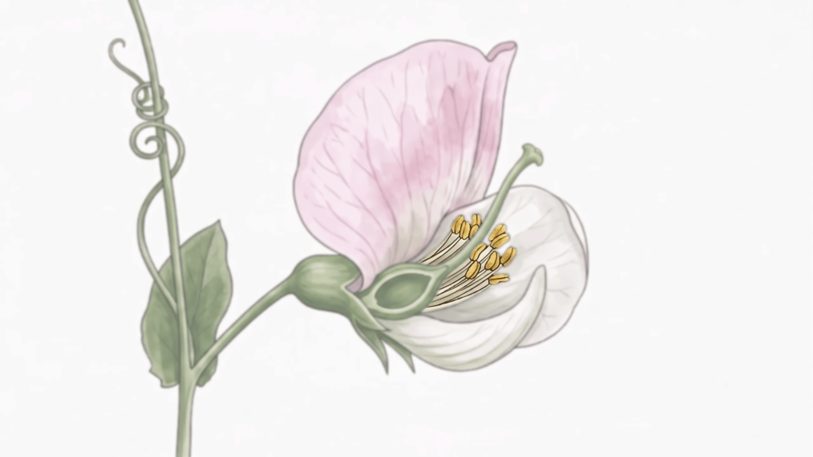

🔄
請將裝置旋轉為
橫向模式
以進行課程互動。
🌿
生殖與遺傳
植物｜互動學習
生殖器官：花
（水蜜桃）
生殖器官：花
（豌豆）
生殖挑戰題
遺傳實驗

👩 母株基因型
(性狀: 黃色種子)
AA
Aa
aa
👨 父株基因型
(性狀: 黃色種子)
AA
Aa
aa
先選定父母基因型才能開始喔
👨 減數分裂 ×4
花粉
0/12
👩 減數分裂 ×1
胚珠
0/4
🐝 授粉
🌱 開始果莢發育
🔮 先預測，再看結果
子代黃色：綠色，預測比例？
4：0
3：1
2：2
0：4
🌱 子代結果
AA × AA
AA・黃
0
Aa・黃
0
aa・綠
0
理論
—
實際
—
—
為什麼和理論值不一定相同？
樣本少、隨機波動
孟德爾定律失效
💡 不懂就問老師！
↻ 再試一次